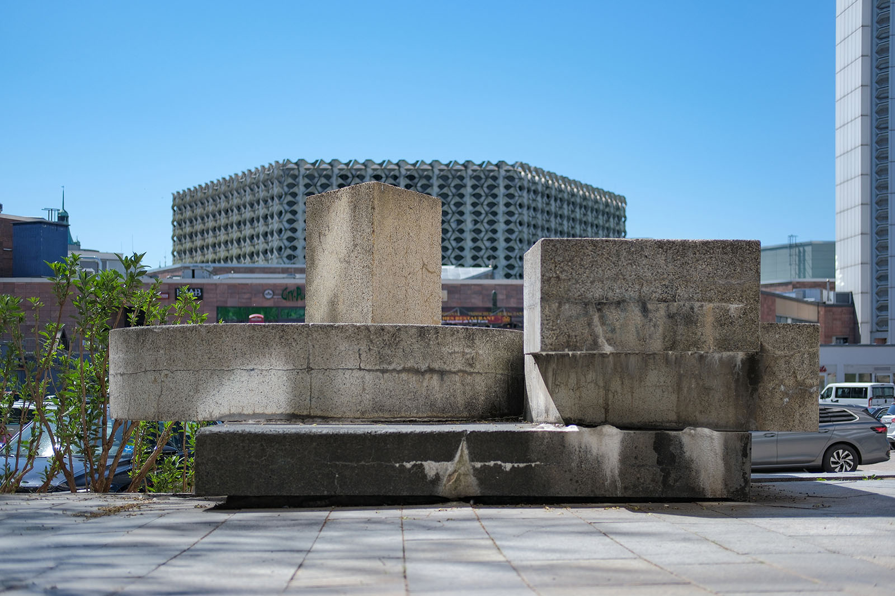
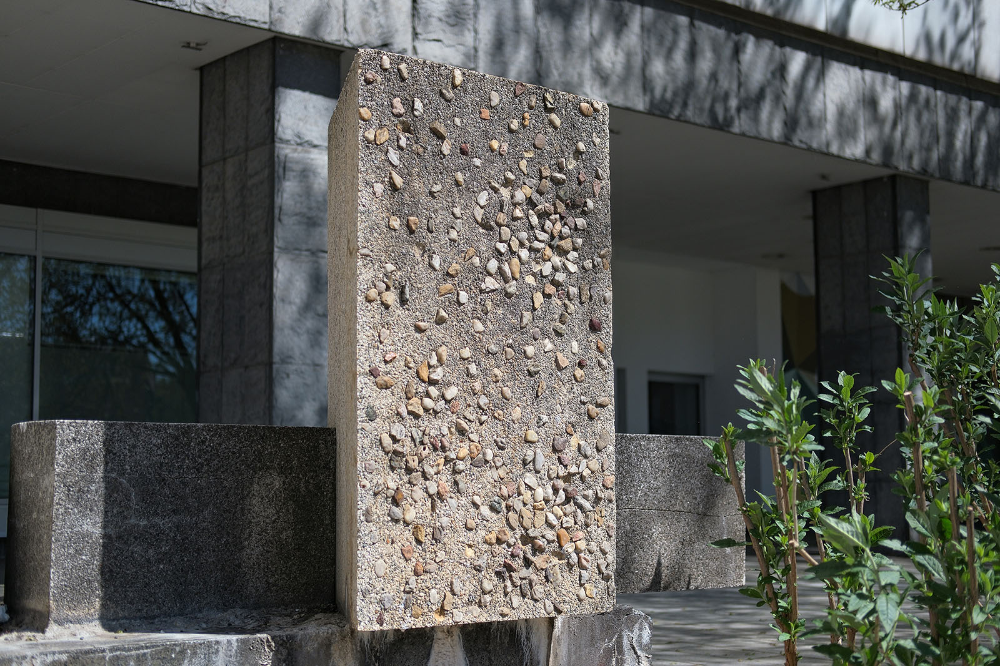
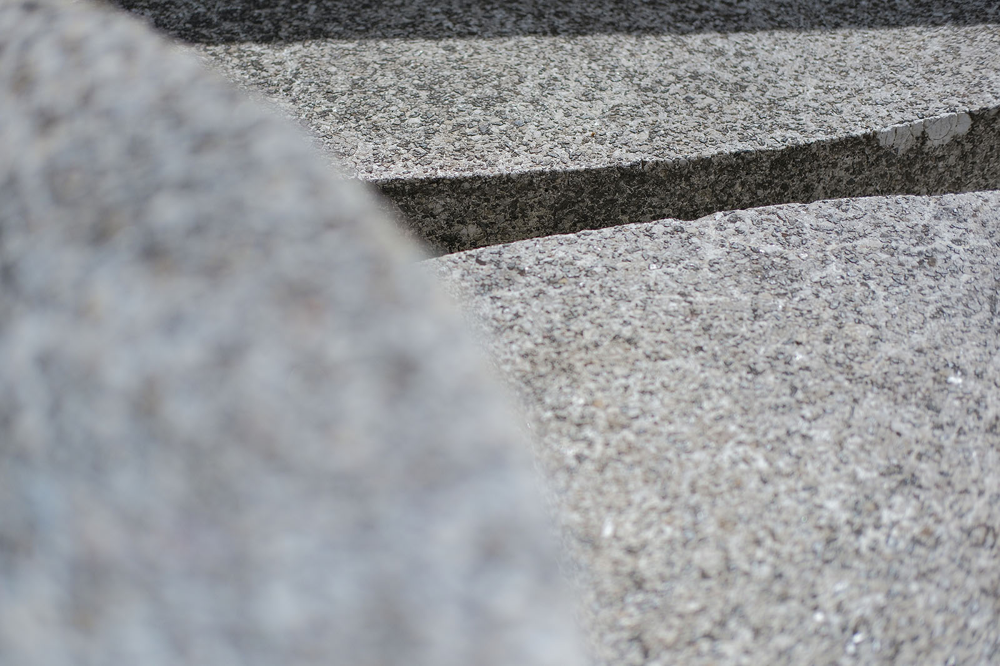
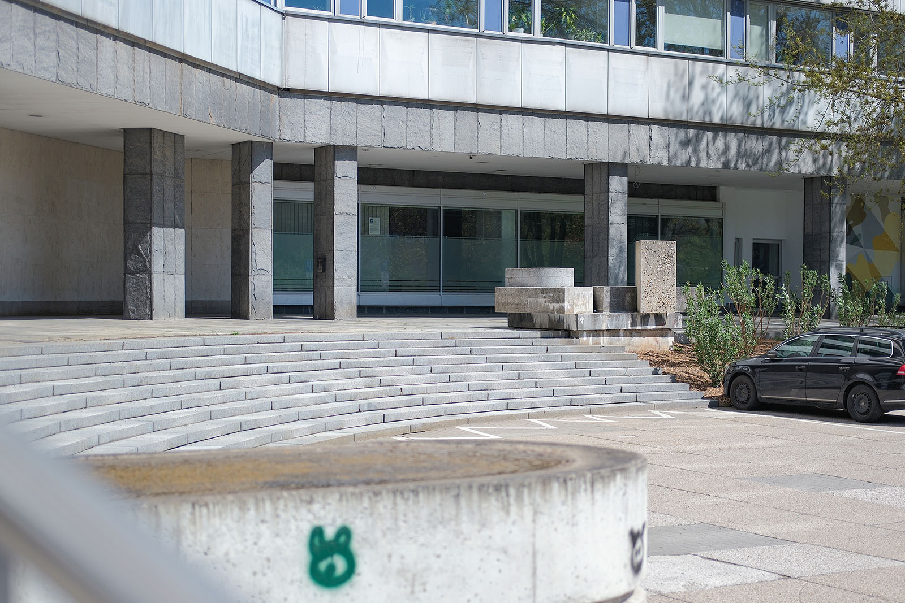
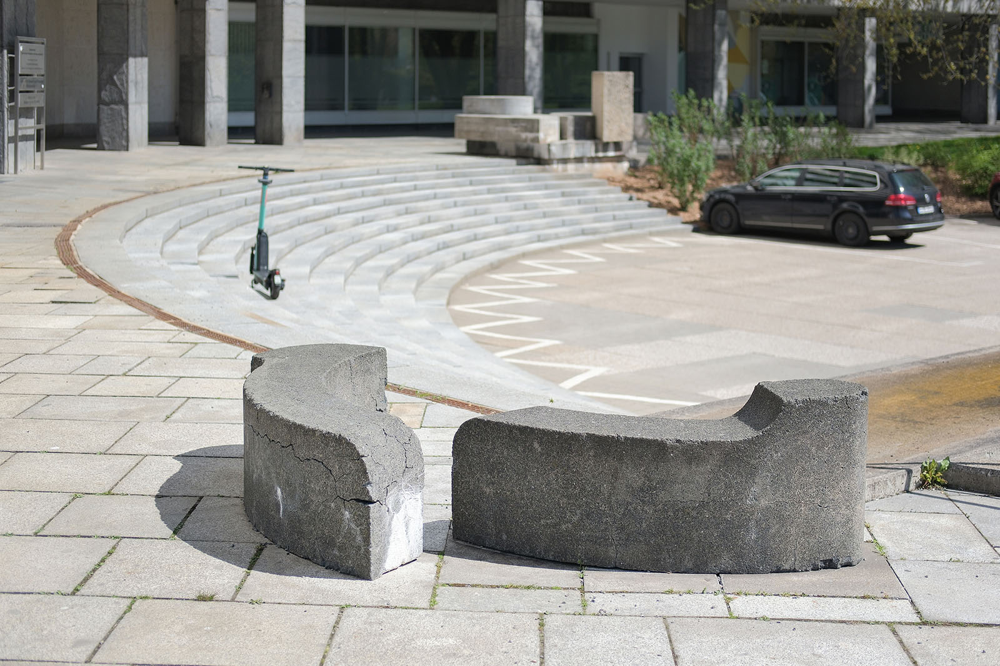

Recherche und Werkbeschreibung: Roman Pilz. Fotografien: Frank Krüger. Text und Bild wechseln sich wie in einem Magazin ab. Ein Klick auf ein Bild öffnet die Großansicht.
Im Zuge der Planung und der Erbauung des zweiten Bauabschnitts des Hauses der Partei- und Staatsorgane des Bezirks von 1977 bis 1979 wurden von der Stadt auch die Freifläche vor dem Gebäude an der Brückenstraße (damals Karl-Marx-Allee) und Mühlenstraße repräsentativ gestaltet. Erst durch den W-förmigen Baukörper des "Hauses der Partei", in dem die SED-Bezirksleitung untergebracht war, und der an den bereits 1971 fertiggestellten, geraden Gebäudeteil mit der Schriftwand und dem Karl-Marx-Monument anschließt, erhielt das gesamte Gebäude den umgangssprachlichen Beinamen "Parteifalte".
Karl Clauss Dietel wurde 1934 in Reinholdshain bei Glauchau geboren und verstarb 2022 in Chemnitz. Dietel absolvierte zunächst von 1949 bis 1952 eine Lehre als Maschinenschlosser und studierte anschließend von 1953 bis 1956 an der Ingenieurschule für Kraftfahrzeugbau Zwickau. Auf der Grundlage seiner praktischen Ausbildung wurde er nach seinem ersten Ingenieur-Abschluss an die 1949 gegründete Hochschule für bildende und angewandte Kunst in Berlin-Weißensee geworben.
In Berlin studierte er von 1956 bis 1961 in der Klasse "Geräte" und machte einen Abschluss als Diplom-Formgestalter. Bereits während seines Studiums lernte er den Gestalter Lutz Rudolph kennen, mit dem er ab 1960 regelmäßig kooperierte. Als Form- und Produktgestalter widmete er sich in den ersten Jahren vor allem dem Automobilbau.
Bis 1963 arbeitete er am VEB Zentrale Entwicklung und Konstruktion für den Fahrzeugbau Karl-Marx-Stadt und entwickelte maßgeblich das Design für den Wartburg 353. Anschließend arbeitete er freiberuflich und entwarf sowohl in der DDR als auch später im vereinigten Deutschland Fahrzeuge, technische Geräte sowie Industrie- und Haushaltsmaschinen. Im Bereich architekturbezogener Kunst war er an der Gestaltung von Innen- und Außenräumen, Möbeln im Stadtraum und öffentlichen Plätzen beteiligt.
Von 1967 bis 1975 hatte er einen Lehrauftrag an der Hochschule für industrielle Formgestaltung Burg Giebichenstein und von 1978 bis 1990 unterrichtete er an der Fachschule für angewandte Kunst in Schneeberg - dort wurde er 1984 zum Professor berufen und hatte von 1986 bis 1990 die Funktion des Direktors inne. Ab 1965 war Dietel Mitglied des Verbandes Bildender Künstler der DDR, für den er auch in leitenden Funktionen tätig war. 1974 trat er wegen seiner kritischen Haltung zum Amt für industrielle Formgestaltung der DDR von seiner Funktion als Vize-Präsident des VBK zurück – in der Wendezeit, von 1988 bis 1990, war er Präsident des DDR-Künstlerverbandes.
Clauss Dietel war Mitglied der SED und Mitglied der Bezirksleitung der SED in Karl-Marx-Stadt, wurde aber zugleich schon früh von der Staatssicherheit observiert und war ab 1981 Ziel eines "Operativen Vorgangs" als missliebige Person. Die Arbeiten Dietels wurden mehrfach ausgezeichnet – zuletzt erhielt er als erster über lange Zeit in der DDR wirkender Gestalter 2014 den Bundesdesignpreis für sein Lebenswerk. Im Raum von Chemnitz sind eine ganze Reihe von Karl Clauss Dietels Entwürfen noch heute erlebbar.
Als Leiter eines Künstlerkollektivs war er maßgeblich für die Gestaltung der Gießerei "Rudolf Harlaß" in Wittgensdorf verantwortlich. Ebenfalls zusammen mit weiteren Künstlern gestaltete er auch den Ehrenhain der Sozialisten auf dem städtischen Friedhof. Künstlerische Arbeiten als Metallgestalter sind im Stadtbad, am Industriemuseum und im ehemaligen Hotel Kongreß zu finden.
Als Gestalter von Bauwerken ist vor allem der Außenbereich der SchmidtBank-Passage mit dem farblich gegliederten Durchgang und den von ihm zusammen mit Lutz Rudolph entwickelten Pavillons besonders erwähnenswert.
Karl Clauss Dietel hatte bereits an der Gestaltung des terrassenförmigen Vorplatzes um das Marx-Monument mitgearbeitet und war auch hier, am sechs Jahre später fortgesetzten Bau, federführend für den künstlerischen Gesamtenwurf der Außenflächen verantwortlich. Er gestaltete die gläserne Tür am Eingang des Hauses und die Treppe mit der künstlerischen Einfassung durch die Plastik "Teilung".
Das auch als "Konstruktive Plastik" bezeichnete Objekt steht von unterhalb der Treppe betrachtet oben rechts – dort, wo die Treppenwange auf eine mit Büschen bepflanzte Grünfläche stößt. Die Treppe und die Beeteinfassung umschreiben etwa die Hälfte eines Kreisbogens, dessen Mittelpunkt auf der Achse liegt, die im Westen durch die beiden hervorspringenden Winkel des Parteigebäudes und im Osten von der Vorderkante der quadratisch gerasterten Blumenbeetfelder gebildet wird.

Links von dem so umschriebenen runden Vorplatz schließt sich eine zweite Treppenwange an, die oben flach und begehbar ist wie ein in den Raum ragender Steg. Von unten erscheint sie steil und ist ähnlich wie die weiter links, vor einer kleineren Treppe liegende Fahnenscheibe horizontal gebändert.
Jedes Element der Treppe scheint von geometrischen Grundformen durchdrungen. Die Plastik "Teilung" verdichtet diese Formen in kompakter und deutlich durch Schnitte, Schichtung und Volumen gegliederter Art und Weise. Die Basis bildet ein flacher Quader mit quadratischer Grundfläche – die dunkle Färbung des mit sichtbaren schwarzen Gesteinskörnungen gebildeten Betonsteins ist eine Reminiszenz an das berühmte "Schwarze Quadrat" von Kasimir Malewitsch, dessen Idee des Suprematismus auch starken Einfluss auf das Bauhaus hatte. Dietel schätzte die Ideen des Bauhauses und würdigte in seiner Heimatstadt Chemnitz insbesondere das Werk der Bauhaus-Künstlerin Marianne Brandt.

Auf der Ebene über dem ungeteilten "Quadrat", das auf einem niedrigen Sockel etwa eine Handbreite über dem Boden des Fußwegs schwebt, liegen zwei gleichgroße hellere Halbkreiskörper. Obwohl ihre Schnittkanten um 90 Grad zueinander versetzt sind und erst eine Drehung von 270 Grad den Kreis wieder schließen würde, sind sie als zwei gleichartige Teile eines gedachten Kreises erkennbar. Beide Kreishälften werden jeweils von einem weiter nach oben aufragenden Körper seitlich durchdrungen.
Der Halbkreis, der parallel zum älteren geraden Gebäudeteil liegt, erfährt eine seitliche Spaltung von einer dreieckigen Stele, die anders als die glatteren Kunststeine als Waschbetonstein mit sichtbarer Körnung aus runden Kieseln gestaltet ist. Die Stele bildet den höchsten Punkt der Plastik – ihr gegenüber schneidet ein flacherer Körper, dessen Grundfläche in ein Quadrat und einen Halbkreis zerlegt werden könnte, den zweiten Halbkreis.

Dieser letzte, sowohl rechteckige als auch runde Körper korrespondiert in seiner Form und Lage auch mit der Treppenwange auf der anderen Seite. Dort gegenüber der Plastik "Teilung" liegen auf dem Bereich vor der Treppenbegrenzung auch zwei abgerundete, viertelkreisförmige Betonsteine im Versatz. Auch sie ähneln einander, unterscheiden sich aber im Detail – einer kragt leicht nach oben, einer zur Seite aus. (Diese Steine, die auch als Sitzgelegenheit dienen können, wurden wohl zu einem späteren Zeitpunkt ergänzt, erscheinen aber in der Formensprache und im Material stimmig mit der Gesamtgestaltung.)
Obwohl Dietel rein abstrakt arbeitet, können der Titel und der Kontext natürlich weiter zur Deutung seines Entwurfs herangezogen werden: Die Bezirkszentrale der Sozialistischen Einheitspartei bildete neben dem Rathaus zu DDR-Zeiten wohl das eigentliche Machtzentrum der Stadt. Während die Fahnenplastik von Ralph Siebenborn einen stärkeren Fokus auf das Motiv der "Einheit" legt, kann man Dietels Plastik als Zusammenspiel von eher gegensätzlich zusammenwirkenden Formen (oder sogar Widersprüchen) denken.

Der wohl zwischen 1976 und 1978 entwickelte Entwurf, der anschließend von örtlichen Handwerkern bis 1980 umgesetzt wurde, kann mit viel Fantasie sogar als Bild der deutschen Teilung gedeutet werden. Außerdem muss, gerade im Kontrast zur großen Marx-Büste von Lew Kerbel, die auf die Frühzeit der avantgardistischen Moderne Bezug nehmende Gestaltung auffallen. Auch wenn gerade im Bereich der architekturbezogenen Kunst und der funktionalen Formgestaltung in den 1970er Jahren in der DDR verstärkt vom Leitbild des sozialistischen Realismus abgewichen werden konnte, war dieser insgesamt weiterhin prägend – das belegen die großen Kunstausstellungen der DDR in Dresden anschaulich.
Ziel des von Dietel gemeinsam mit dem Gartenarchitekten Helmut Rothe entworfenen Konzepts war es, die monumentalen Maße des Bürogebäudes und der Bronzebüste durch verschiedenartiges Stadtgrün und bauliche Strukturierung einzuhegen: Im Gegensatz zum streng linearen Bereich vor dem Marx-Monument ist der Bereich vor dem "Haus der Partei" kleinteiliger und abwechslungsreicher gestaltet: Verschiedenartige Wege, Treppen und Beete mit kleineren und größeren Pflanzungen prägen diesen zentralen und zugleich geschützten Rückzugsort, der mit einem Brunnen, weiteren Teichbecken, Bänken und exotischen Bäumen geschmückt ist.

Die Möblierung der Stadt
„Konstruktive Plastik / Teilung“ von Karl Clauss Dietel (1976/80)